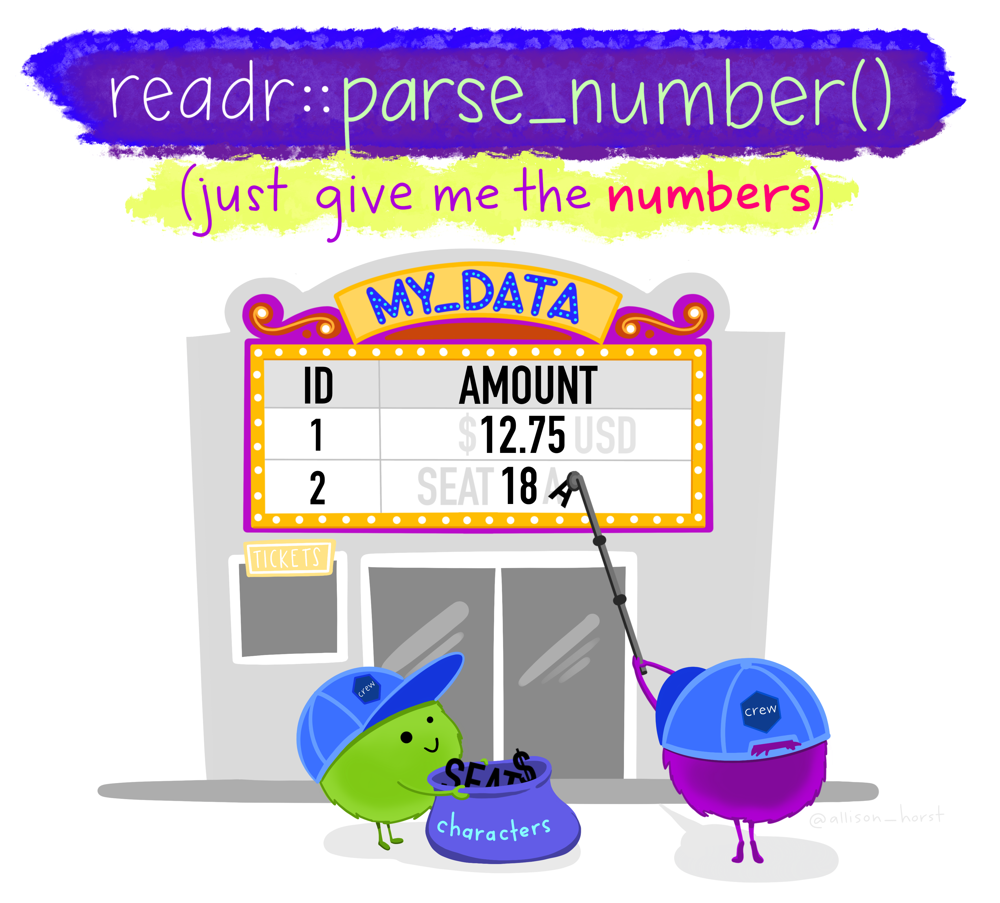

2 Data wrangling I
Intended Learning Outcomes
In the next two chapters, we will build on the data wrangling skills from level 1. We will revisit all the functions you have already encountered (and might have forgotten over the summer break) and introduce 2 or 3 new functions. These two chapters will provide an opportunity to revise and apply the functions to a novel dataset.
By the end of this chapter, you should be able to:
- apply familiar data wrangling functions to novel datasets
- read and interpret error messages
- realise there are several ways of getting to the results
- export data objects as csv files
The main purpose of this chapter and Chapter 3 is to wrangle your data into shape for data visualisation (Chapter 4 and Chapter 5). For the two chapters, we will:
- calculate demographics
- tidy 3 different questionnaires with varying degrees of complexity
- solve an error mode problem
- join all data objects together
Individual Walkthrough
Before we start, we need to set up some things.
2.1 Activity 1: Setup
- We will be working on the dataset by Pownall et al. (2023) again, which means we can still use the project we created last week. The data files will already be there, so no need to download them again.
- To open the project in RStudio, go to the folder in which you stored the project and the data last time, and double click on the project icon.
-
Create a new
.Rmdfile for chapter 2 and save it to your project folder. Name it something meaningful (e.g., “chapter_02.Rmd”, “02_data_wrangling.Rmd”). See Section 1.3 if you need some guidance. - In your newly created
.Rmdfile, delete everything below line 12 (after the set-up code chunk).
2.2 Activity 2: Load in the libraries and read in the data
We will use tidyverse today, and we want to create a data object data_prp that stores the data from the file prp_data_reduced.csv.
If you need a quick reminder what the dataset was about, have a look at the abstract in Section 1.4. We also addressed the changes we made to the dataset there.
And remember to have a quick glimpse() at your data.
2.3 Activity 3: Calculating demographics
Let’s start with some simple data-wrangling steps to compute demographics for our original dataset, data_prp. First, we want to determine how many participants took part in the study by Pownall et al. (2023) and compute the mean age and the standard deviation of age for the sample.
2.3.1 … for the full sample using summarise()
The summarise() function is part of the “Wickham Six” alongside group_by(), select(), filter(), mutate(), and arrange(). You used them plenty of times last year.
Within summarise(), we can use the n() function, which calculates the number of rows in the dataset. Since each row corresponds to a unique participant, this gives us the total number of participants.
To calculate the mean age and the standard deviation of age, we need to use the functions mean() and sd() on the column Age respectively.
demo_total <- data_prp %>%
summarise(n = n(), # participant number
mean_age = mean(Age), # mean age
sd_age = sd(Age)) # standard deviation of ageWarning: There were 2 warnings in `summarise()`.
The first warning was:
ℹ In argument: `mean_age = mean(Age)`.
Caused by warning in `mean.default()`:
! argument is not numeric or logical: returning NA
ℹ Run `dplyr::last_dplyr_warnings()` to see the 1 remaining warning.| n | mean_age | sd_age |
|---|---|---|
| 89 | NA | NA |
R did not give us an error message per se, but the output is not quite as expected either. There are NA values in the mean_age and sd_age columns. Looking at the warning message and at Age, can you explain what happened?
Fixing Age
Might be wise to look at the unique answers in column Age to determine what is wrong. We can do that with the function distinct().
One cell has the string “years” added to their number 25, which has converted the entire column into a character column.
We can easily fix this by extracting only the numbers from the column and converting it into a numeric data type. The parse_number() function, which is part of the tidyverse package, handles both steps in one go (so there’s no need to load additional packages).
We will combine this with the mutate() function to create a new column called Age (containing those numeric values), effectively replacing the old Age column (which had the character values).

Computing summary stats
Excellent. Now that the numbers are in a numeric format, let’s try calculating the demographics for the total sample again.
demo_total <- data_prp %>%
summarise(n = n(), # participant number
mean_age = mean(Age), # mean age
sd_age = sd(Age)) # standard deviation of age
demo_total| n | mean_age | sd_age |
|---|---|---|
| 89 | NA | NA |
Even though there’s no error or warning, the table still shows NA values for mean_age and sd_age. So, what could possibly be wrong now?
Computing summary stats - third attempt
To ensure R ignores missing values during calculations, we need to add the extra argument na.rm = TRUE to the mean() and sd() functions.
demo_total <- data_prp %>%
summarise(n = n(), # participant number
mean_age = mean(Age, na.rm = TRUE), # mean age
sd_age = sd(Age, na.rm = TRUE)) # standard deviation of age
demo_total| n | mean_age | sd_age |
|---|---|---|
| 89 | 21.88506 | 3.485603 |
Finally, we’ve got it! 🥳 Third time’s the charm!
2.3.2 … per gender using summarise() and group_by()
Now we want to compute the summary statistics for each gender. The code inside the summarise() function remains unchanged; we just need to use the group_by() function beforehand to tell R that we want to compute the summary statistics for each group separately. It’s also a good practice to use ungroup() afterwards, so you are not taking groupings forward unintentionally.
demo_by_gender <- data_prp %>%
group_by(Gender) %>% # split data up into groups (here Gender)
summarise(n = n(), # participant number
mean_age = mean(Age, na.rm = TRUE), # mean age
sd_age = sd(Age, na.rm = TRUE)) %>% # standard deviation of age
ungroup()
demo_by_gender| Gender | n | mean_age | sd_age |
|---|---|---|---|
| 1 | 17 | 23.31250 | 5.770254 |
| 2 | 69 | 21.57353 | 2.738973 |
| 3 | 3 | 21.33333 | 1.154700 |
2.3.3 Adding percentages
Sometimes, it may be useful to calculate percentages, such as for the gender split. You can do this by adding a line within the summarise() function to perform the calculation. All we need to do is take the number of female, male, and non-binary participants (stored in the n column of demo_by_gender), divide it by the total number of participants (stored in the n column of demo_total), and multiply by 100. Let’s add percentage to the summarise() function of demo_by_gender. Make sure that the code for percentages is placed after the value for n has been computed.
Accessing the value of n for the different gender categories is straightforward because we can refer back to it directly. However, since the total number of participants is stored in a different data object, we need to use a base R function to access it – specifically the $ operator. To do this, you simply type the name of the data object (in this case, demo_total), followed by the $ symbol (with no spaces), and then the name of the column you want to retrieve (in this case, n). The general pattern is data$column.
demo_by_gender <- data_prp %>%
group_by(Gender) %>%
summarise(n = n(),
# n from the line above divided by n from demo_total *100
percentage = n/demo_total$n *100,
mean_age = mean(Age, na.rm = TRUE),
sd_age = sd(Age, na.rm = TRUE)) %>%
ungroup()
demo_by_gender| Gender | n | percentage | mean_age | sd_age |
|---|---|---|---|---|
| 1 | 17 | 19.101124 | 23.31250 | 5.770254 |
| 2 | 69 | 77.528090 | 21.57353 | 2.738973 |
| 3 | 3 | 3.370786 | 21.33333 | 1.154700 |
round()
Not super important, because you could round the values by yourself when writing up your reports, but if you wanted to tidy up the decimal places in the output, you can do that using the round() function. You would need to “wrap” it around your computations and specify how many decimal places you want to display (for example mean(Age) would turn into round(mean(Age), 1)). It may look odd for percentage, just make sure the number that specifies the decimal places is placed within the round function. The default value is 0 (meaning no decimal spaces).
demo_by_gender <- data_prp %>%
group_by(Gender) %>%
summarise(n = n(),
percentage = round(n/demo_total$n *100, 2), # percentage with 2 decimal places
mean_age = round(mean(Age, na.rm = TRUE), 1), # mean Age with 1 decimal place
sd_age = round(sd(Age, na.rm = TRUE), 3)) %>% # sd Age with 3 decimal places
ungroup()
demo_by_gender| Gender | n | percentage | mean_age | sd_age |
|---|---|---|---|---|
| 1 | 17 | 19.10 | 23.3 | 5.770 |
| 2 | 69 | 77.53 | 21.6 | 2.739 |
| 3 | 3 | 3.37 | 21.3 | 1.155 |
2.4 Activity 4: Questionable Research Practices (QRPs)
The main goal is to compute the mean QRP score per participant for time point 1.
At the moment, the data is in wide format. The table below shows data from the first 3 participants:
| Code | Gender | Age | Ethnicity | Secondyeargrade | Opptional_mod | Opptional_mod_1_TEXT | Research_exp | Research_exp_1_TEXT | Plan_prereg | SATS28_1_Affect_Time1 | SATS28_2_Affect_Time1 | SATS28_3_Affect_Time1 | SATS28_4_Affect_Time1 | SATS28_5_Affect_Time1 | SATS28_6_Affect_Time1 | SATS28_7_CognitiveCompetence_Time1 | SATS28_8_CognitiveCompetence_Time1 | SATS28_9_CognitiveCompetence_Time1 | SATS28_10_CognitiveCompetence_Time1 | SATS28_11_CognitiveCompetence_Time1 | SATS28_12_CognitiveCompetence_Time1 | SATS28_13_Value_Time1 | SATS28_14_Value_Time1 | SATS28_15_Value_Time1 | SATS28_16_Value_Time1 | SATS28_17_Value_Time1 | SATS28_18_Value_Time1 | SATS28_19_Value_Time1 | SATS28_20_Value_Time1 | SATS28_21_Value_Time1 | SATS28_22_Difficulty_Time1 | SATS28_23_Difficulty_Time1 | SATS28_24_Difficulty_Time1 | SATS28_25_Difficulty_Time1 | SATS28_26_Difficulty_Time1 | SATS28_27_Difficulty_Time1 | SATS28_28_Difficulty_Time1 | QRPs_1_Time1 | QRPs_2_Time1 | QRPs_3_Time1 | QRPs_4_Time1 | QRPs_5_Time1 | QRPs_6_Time1 | QRPs_7_Time1 | QRPs_8_Time1 | QRPs_9_Time1 | QRPs_10_Time1 | QRPs_11_Time1 | QRPs_12NotQRP_Time1 | QRPs_13NotQRP_Time1 | QRPs_14NotQRP_Time1 | QRPs_15NotQRP_Time1 | Understanding_OS_1_Time1 | Understanding_OS_2_Time1 | Understanding_OS_3_Time1 | Understanding_OS_4_Time1 | Understanding_OS_5_Time1 | Understanding_OS_6_Time1 | Understanding_OS_7_Time1 | Understanding_OS_8_Time1 | Understanding_OS_9_Time1 | Understanding_OS_10_Time1 | Understanding_OS_11_Time1 | Understanding_OS_12_Time1 | Pre_reg_group | Other_OS_behav_2 | Other_OS_behav_4 | Other_OS_behav_5 | Closely_follow | SATS28_Affect_Time2_mean | SATS28_CognitiveCompetence_Time2_mean | SATS28_Value_Time2_mean | SATS28_Difficulty_Time2_mean | QRPs_Acceptance_Time2_mean | Time2_Understanding_OS | Supervisor_1 | Supervisor_2 | Supervisor_3 | Supervisor_4 | Supervisor_5 | Supervisor_6 | Supervisor_7 | Supervisor_8 | Supervisor_9 | Supervisor_10 | Supervisor_11 | Supervisor_12 | Supervisor_13 | Supervisor_14 | Supervisor_15_R |
|---|---|---|---|---|---|---|---|---|---|---|---|---|---|---|---|---|---|---|---|---|---|---|---|---|---|---|---|---|---|---|---|---|---|---|---|---|---|---|---|---|---|---|---|---|---|---|---|---|---|---|---|---|---|---|---|---|---|---|---|---|---|---|---|---|---|---|---|---|---|---|---|---|---|---|---|---|---|---|---|---|---|---|---|---|---|---|---|---|---|---|
| Tr10 | 2 | 22 | White European | 2 | 1 | Research methods in first year | 2 | NA | 1 | 4 | 5 | 3 | 4 | 5 | 5 | 4 | 2 | 2 | 6 | 4 | 3 | 1 | 7 | 7 | 2 | 1 | 3 | 3 | 2 | 2 | 3 | 5 | 2 | 6 | 4 | 4 | 1 | 7 | 7 | 5 | 7 | 3 | 4 | 5 | 7 | 6 | 7 | 7 | 2 | 1 | 1 | 2 | 2 | 2 | 2 | 6 | Entirely confident | Entirely confident | 6 | 6 | Entirely confident | Entirely confident | Entirely confident | Entirely confident | 1 | 1 | 1 | NA | 2 | 3.500000 | 4.166667 | 3.000000 | 2.857143 | 5.636364 | 5.583333 | 5 | 5 | 6 | 6 | 5 | 5 | 1 | 5 | 6 | 5 | NA | 4 | 4 | 5 | 1 |
| Bi07 | 2 | 20 | White British | 3 | 2 | NA | 2 | NA | 3 | 5 | 6 | 2 | 5 | 5 | 6 | 2 | 2 | 2 | 7 | 3 | 5 | 1 | 7 | 7 | 1 | 1 | 6 | 3 | 1 | 1 | 2 | 6 | 2 | 7 | 2 | 5 | 7 | 7 | 7 | 2 | 7 | 3 | 7 | 7 | 7 | 7 | 6 | 7 | 2 | 1 | 4 | 4 | 2 | Not at all confident | Not at all confident | Not at all confident | 6 | Entirely confident | Not at all confident | 3 | 6 | 6 | 2 | 2 | 1 | NA | NA | NA | 2 | 3.166667 | 4.666667 | 6.222222 | 2.857143 | 5.454546 | 3.333333 | 7 | 6 | 7 | 7 | 7 | 7 | 1 | 5 | 7 | 7 | 7 | 5 | 2 | 7 | 1 |
| SK03 | 2 | 22 | White British | 1 | 2 | NA | 2 | NA | 1 | 5 | 3 | 5 | 2 | 5 | 2 | 2 | 2 | 2 | 6 | 5 | 3 | 2 | 6 | 6 | 3 | 3 | 5 | 3 | 4 | 3 | 5 | 5 | 2 | 5 | 2 | 5 | 5 | 7 | 7 | 6 | 6 | 7 | 6 | 7 | 7 | 7 | 5 | 7 | 1 | 1 | 3 | 2 | 6 | 2 | 3 | 6 | 6 | 5 | 2 | 5 | 5 | 5 | 4 | 5 | 1 | NA | NA | NA | 2 | 4.833333 | 6.166667 | 6.000000 | 4.000000 | 6.272727 | 5.416667 | 7 | 7 | 7 | 7 | 7 | 7 | 1 | 7 | 7 | 7 | 7 | 7 | 5 | 7 | 1 |
Looking at the QRP data at time point 1, you determine that
- individual item columns are , and
- according to the codebook, there are reverse-coded items in this questionnaire.
According to the codebook and the data table above, we just have to compute the average score for QRP items to , since items to are distractor items. Seems quite straightforward.
However, as you can see in the table above, each item is in a separate column, meaning the data is in wide format. It would be much easier to calculate the mean scores if the items were arranged in long format.
Let’s tackle this problem step by step. It’s best to create a separate data object for this. If we tried to compute it within data_prp, it could quickly become messy.
-
Step 1: Select the relevant columns
Code, andQRPs_1_Time1toQRPs_11_Time1and store them in an object calledqrp_t1 -
Step 2: Pivot the data from wide format to long format using
pivot_longer()so we can calculate the average score more easily (in step 3) -
Step 3: Calculate the average QRP score (
QRPs_Acceptance_Time1_mean) per participant usinggroup_by()andsummarise()
qrp_t1 <- data_prp %>%
#Step 1
select(Code, QRPs_1_Time1:QRPs_11_Time1) %>%
# Step 2
pivot_longer(cols = -Code, names_to = "Items", values_to = "Scores") %>%
# Step 3
group_by(Code) %>% # grouping by participant id
summarise(QRPs_Acceptance_Time1_mean = mean(Scores)) %>% # calculating the average Score
ungroup() # just make it a habitYou could rename the columns whilst selecting them. The pattern would be select(new_name = old_name). For example, if we wanted to select variable Code and rename it as Participant_ID, we could do that.
2.5 Activity 5: Knitting
Once you’ve completed your R Markdown file, the final step is to “knit” it, which converts the .Rmd file into a HTML file. Knitting combines your code, text, and output (like tables and plots) into a single cohesive document. This is a really good way to check your code is working.
To knit the file, click the Knit button at the top of your RStudio window. The document will be generated and, depending on your setting, automatically opened in the viewer in the Output pane or an external browser window.
If any errors occur during knitting, RStudio will show you an error message with details to help you troubleshoot.
If you want to intentionally keep any errors we tackled today to keep a reference on how you solved them, you could add error=TRUE or eval=FALSE to the code chunk that isn’t running.
2.6 Activity 6: Export a data object as a csv
To avoid having to repeat the same steps in the next chapter, it’s a good idea to save the data objects you’ve created today as csv files. You can do this by using the write_csv() function from the readr package. The csv files will appear in your project folder.
The basic syntax is:
Now, let’s export the objects data_prp and qrp_t1.
Here we named the file data_prp_for_ch3.csv, so we wouldn’t override the original data csv file prp_data_reduced.csv. However, feel free to choose a name that makes sense to you.
Check that your csv files have appeared in your project folder, and you’re all set!
That’s it for Chapter 2: Individual Walkthrough.
Pair-coding
We will continue working with the data from Binfet et al. (2021), focusing on the randomised controlled trial of therapy dog interventions. Today, our goal is to calculate an average Flourishing score for each participant at time point 1 (pre-intervention) using the raw data file dog_data_raw. Currently, the data looks like this:
| RID | F1_1 | F1_2 | F1_3 | F1_4 | F1_5 | F1_6 | F1_7 | F1_8 |
|---|---|---|---|---|---|---|---|---|
| 1 | 6 | 7 | 5 | 5 | 7 | 7 | 6 | 6 |
| 2 | 5 | 7 | 6 | 5 | 5 | 5 | 5 | 4 |
| 3 | 5 | 5 | 5 | 6 | 6 | 6 | 5 | 5 |
| 4 | 7 | 6 | 7 | 7 | 7 | 6 | 7 | 4 |
| 5 | 5 | 5 | 4 | 6 | 7 | 7 | 7 | 6 |
However, we want the data to look like this:
| RID | Flourishing_pre |
|---|---|
| 1 | 6.125 |
| 2 | 5.250 |
| 3 | 5.375 |
| 4 | 6.375 |
| 5 | 5.875 |
Task 1: Open the R project you created last week
If you haven’t created an R project for the lab yet, please do so now. If you already have one set up, go ahead and open it.
Task 2: Open your .Rmd file from last week
Since we haven’t used it much yet, feel free to continue using the .Rmd file you created last week in Task 2.
Task 3: Load in the library and read in the data
The data should be in your project folder. If you didn’t download it last week, or if you’d like a fresh copy, you can download the data again here: data_pair_coding.
We will be using the tidyverse package today, and the data file we need to read in is dog_data_raw.csv.
Task 4: Calculating the mean for Flourishing_pre
-
Step 1: Select all relevant columns from
dog_data_raw, including participant ID and all items from theFlourishingquestionnaire completed before the intervention. Store this data in an object calleddata_flourishing.
- Step 2: Pivot the data from wide format to long format so we can calculate the average score more easily (in step 3).
-
Step 3: Calculate the average Flourishing score per participant and name this column
Flourishing_preto match the table above.
Test your knowledge and challenge yourself
Knowledge check
Question 1
Which function of the Wickham Six would you use to include or exclude certain variables (columns)?
Question 2
Which function of the Wickham Six would you use to create new columns or modify existing columns in a dataframe?
Question 3
Which function of the Wickham Six would you use to organise data into groups based on one or more columns?
Question 4
Which function of the Wickham Six would you use to sort the rows of a dataframe based on the values in one or more columns?
Question 5
Which function of the Wickham Six would NOT modify the original dataframe?
Error mode
Some of the code chunks contain mistakes and result in errors, while others do not produce the expected results. Your task is to identify any issues, explain why they occurred, and, if possible, fix them.
We will use a few built-in datasets, such as billboard and starwars, to help you replicate the errors in your own R environment. You can view the data either by typing the dataset name directly into your console or by storing the data as a separate object in your Global Environment.
Question 6
Currently, the weekly song rankings for Billboard Top 100 in 2000 are in wide format, with each week in a separate column. The following code is supposed to transpose the wide-format billboard data into long format:
Error in `pivot_longer()`:
! `cols` must select at least one column.What does this error message mean and how do you fix it?
Question 7
The following code is intended to calculate the mean height of all the characters in the built-in starwars dataset, grouped by their gender.
Warning: Returning more (or less) than 1 row per `summarise()` group was deprecated in
dplyr 1.1.0.
ℹ Please use `reframe()` instead.
ℹ When switching from `summarise()` to `reframe()`, remember that `reframe()`
always returns an ungrouped data frame and adjust accordingly.The code runs, but it’s giving us some weird warning and the output is also not as expected. What steps should we take to fix this?
Question 8
Following up on Question 7, we now have summary_data that looks approximately correct - it has the expected rows and column numbers, however, the cell values are “weird”.
Can you explain what is happening here? And how can we modify the code to fix this?
Challenge yourself
If you want to challenge yourself and further apply the skills from Chapter 2, you can wrangle the data from dog_data_raw for additional questionnaires from either the pre- and/or post-intervention stages:
- Calculate the mean score for
flourishing_postfor each participant. - Calculate the mean score for the
PANAS(Positive and/or Negative Affect) per participant - Calculate the mean score for happiness (
SHS) per participant
The 3 steps are equivalent for those questionnaires - select, pivot, group_by and summarise; you just have to “replace” the questionnaire items involved.